Goal
Eliminate checkout delays by making the in-store code easily discoverable and accessible.
 2 — Eliminate checkout delays through better code accessibility
2 — Eliminate checkout delays through better code accessibility
A comprehensive redesign of the Amazon app's Whole Foods checkout feature that eliminates the frustrating search for in-store checkout codes. The project replaces the cluttered, hard-to-navigate interface with persistent code visibility and intuitive placement, creating a seamless checkout experience that reduces customer delays and friction at Whole Foods stores.
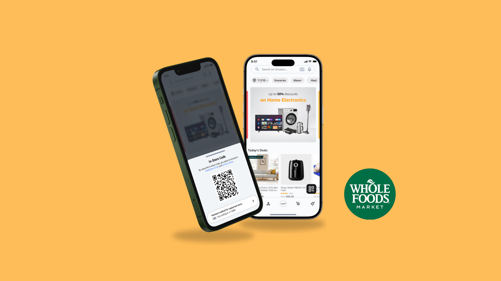
Whole Foods is a premium grocery chain offering natural and organic products across the U.S. Through Amazon integration, customers can use the Amazon app to access in-store checkout codes, allowing them to scan items and pay directly through the app without waiting in traditional checkout lines.
In this solo User Experience Design class project, I took on the full product design process from research to final prototype. I conducted user research and problem analysis, developed personas and journey maps, created wireframes and high-fidelity prototypes, and defined design principles that prioritize persistent visibility and intuitive navigation patterns in the redesigned checkout experience.
The Amazon app's Whole Foods checkout feature had poor navigation and hidden functionality, creating friction for customers completing in-store purchases.
The checkout code was buried in the app with no clear access point. Users spent 2-3 minutes searching for their code, with 68% looking in wrong sections and 38% expecting missing functionality. This caused checkout delays, abandoned purchases, and frustrated customers who reverted to traditional lines.
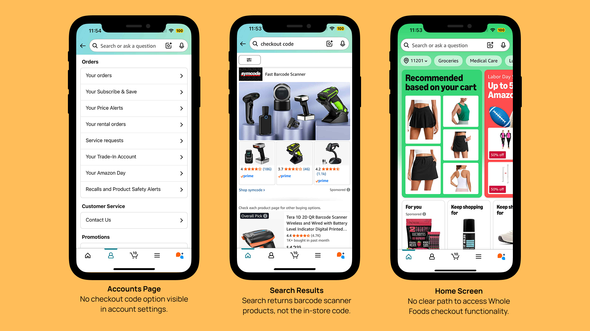
1 — Whole Foods checkout experience issuesEliminate checkout delays by making the in-store code easily discoverable and accessible.
2 — Eliminate checkout delays through better code accessibility
To better understand user frustrations, I conducted six interviews and two rounds of usability tests.
Three critical pain points emerged that were causing delays and confusion in the checkout process:
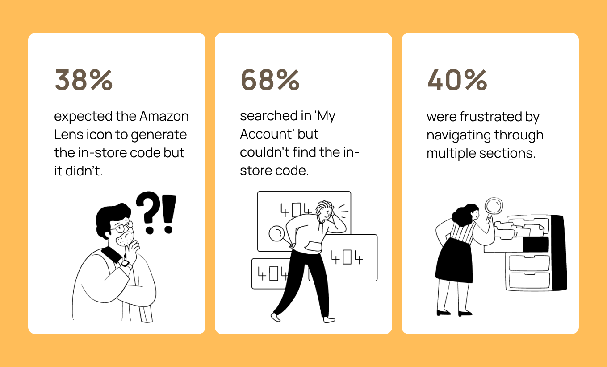
I organized the research insights into thematic clusters to identify patterns and prioritize the most critical user pain points.
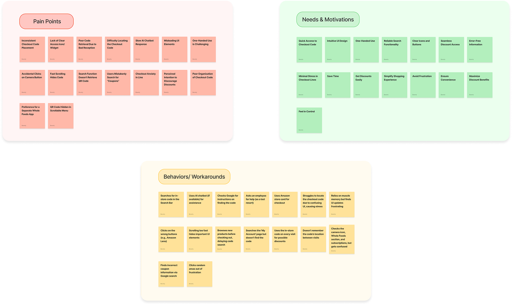
My research identified three primary user groups, each experiencing specific pain points in the checkout flow:
needs instant access to her checkout code without fumbling through menus while juggling shopping and one-handed phone navigation.
needs the checkout code to appear automatically when she enters Whole Foods, eliminating search stress during busy checkout periods.
needs clear, intuitive UI elements and better search functionality to find the checkout code without confusion or multiple failed attempts.
To understand best practices in mobile checkout experiences, I analyzed
CVS
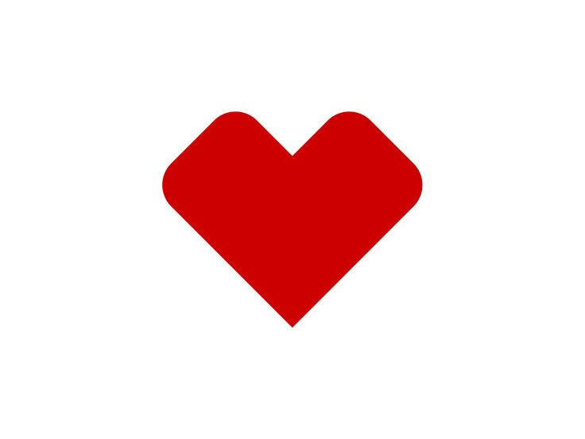 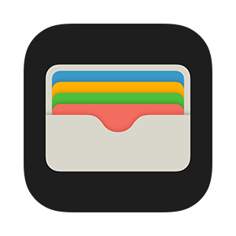
These platforms were selected because they represent successful implementations of mobile checkout solutions. By examining their interface design, code accessibility, and user flow patterns, I could directly compare their approaches against Whole Foods' current implementation.
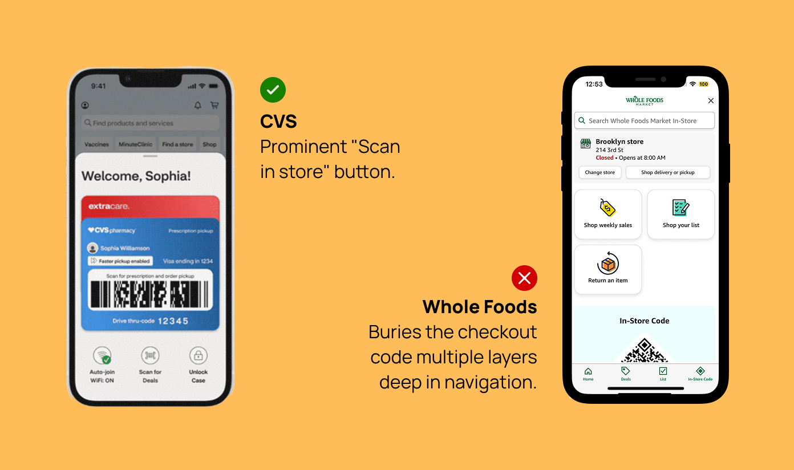
5.1 — (CVS) Mobile Checkout Experience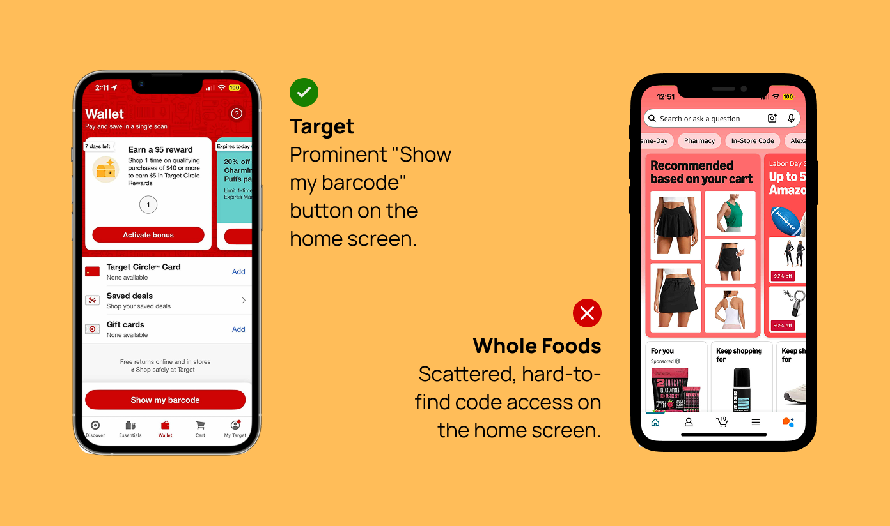
5.2 — (Target) Mobile Checkout Experience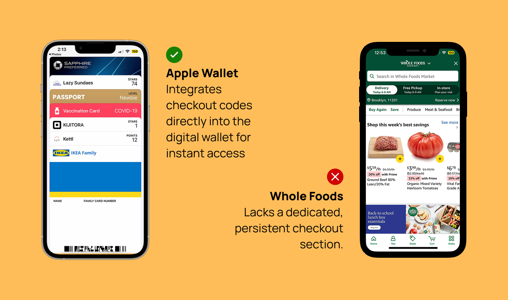
5.3 — (Apple Wallet) Mobile Checkout ExperienceThe visual comparison above reveals significant design gaps in checkout code accessibility and highlights specific areas where Whole Foods falls short of industry standards.
Through this analysis, I identified three key opportunities to address Whole Foods' checkout accessibility issues.
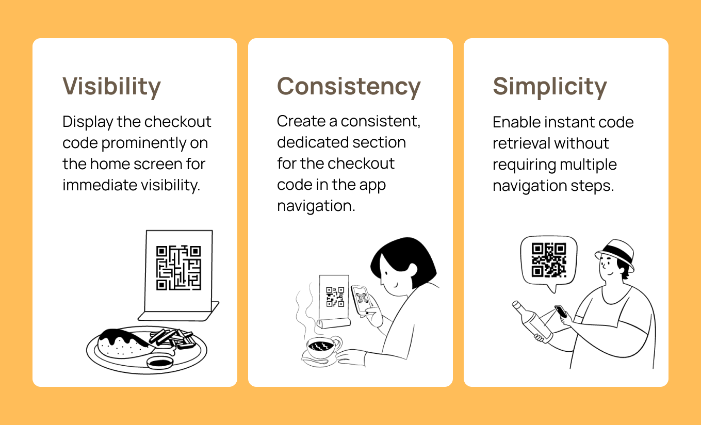
I translated these opportunities into design concepts, starting with wireframes to test different placement and visibility solutions.
 7.1 — (Paper Wireframes) Initial concept exploration
7.1 — (Paper Wireframes) Initial concept exploration
 7.2 — (Low-Fidelity Wireframes) Digital concept development
7.2 — (Low-Fidelity Wireframes) Digital concept development
After 2 rounds of user testing with 5 individuals, here's what I found:
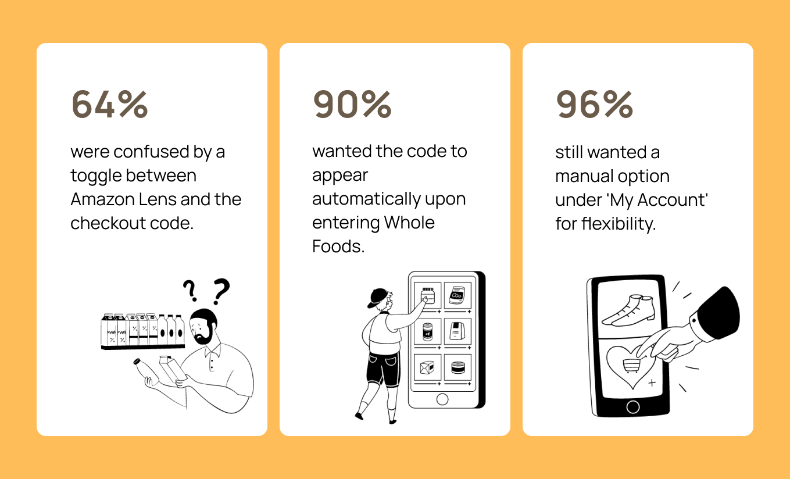
Building on user testing insights, I designed two key changes to improve the checkout experience:
A distinct QR code button appears when users enter Whole Foods, addressing Jane's need for one-handed navigation and Sarah's desire for automatic code surfacing during busy checkout periods.
A dedicated 'In-Store Code' section under My Account resolves John's confusion with UI elements and provides the clear, searchable location that 68% of users expected to find.


User frustration often stems from broken mental models, not missing features.
This project taught me that 68% of users weren't frustrated because the checkout code was hard to use - they were frustrated because it wasn't where they expected it to be. Rather than adding new functionality, my solution focused on aligning the interface with existing user expectations about payment flows. This experience shifted my approach to start with mapping user mental models before designing new interfaces.

A case study on a refactored approval flow with smarter logic, clearer audit trails, and a redesigned UI for improved usability.

A case study on improving accessibility and user productivity for sight-impaired users in the Salesforce Flow Builder.

A case study on ensuring comprehensive keyboard navigation towards an improved resource selection experience in the Salesforce Flow Builder.